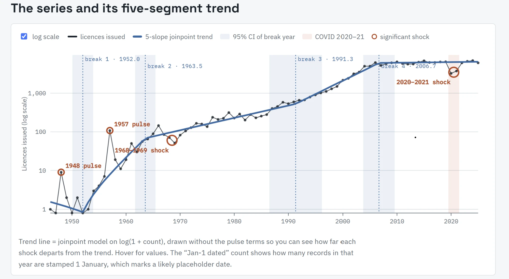
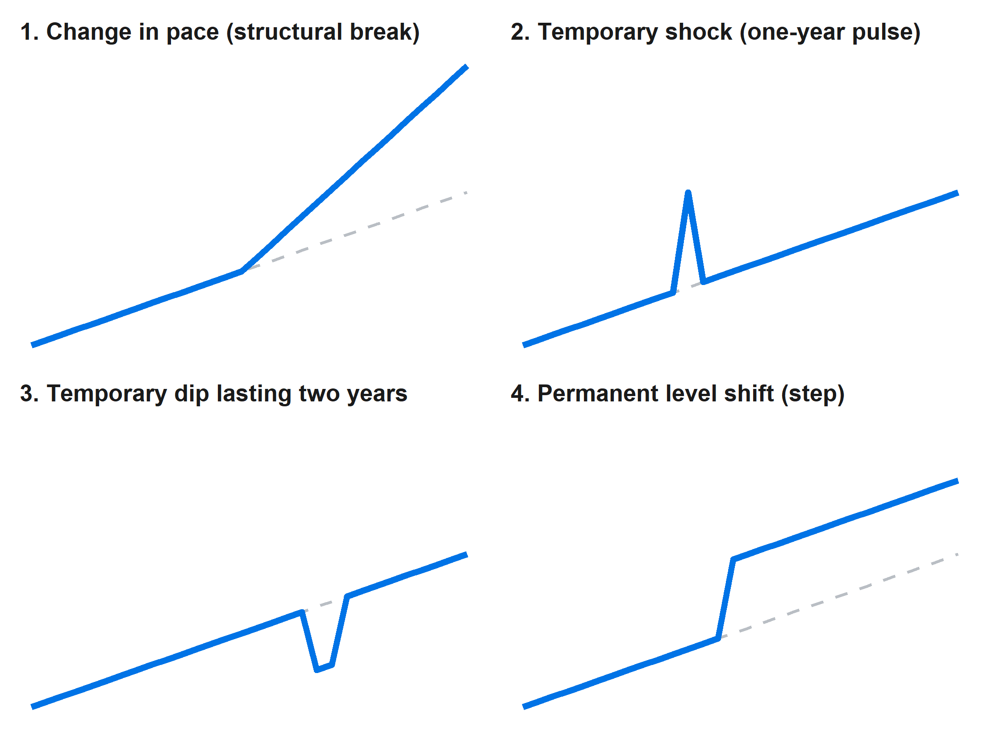
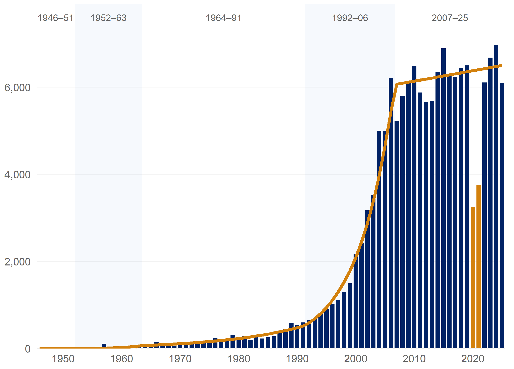
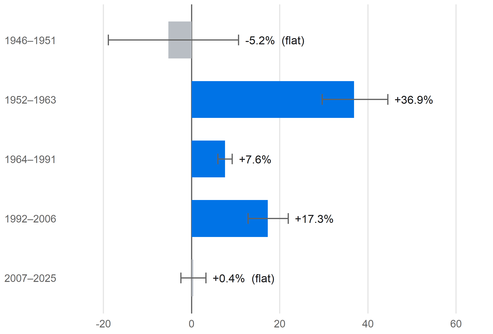
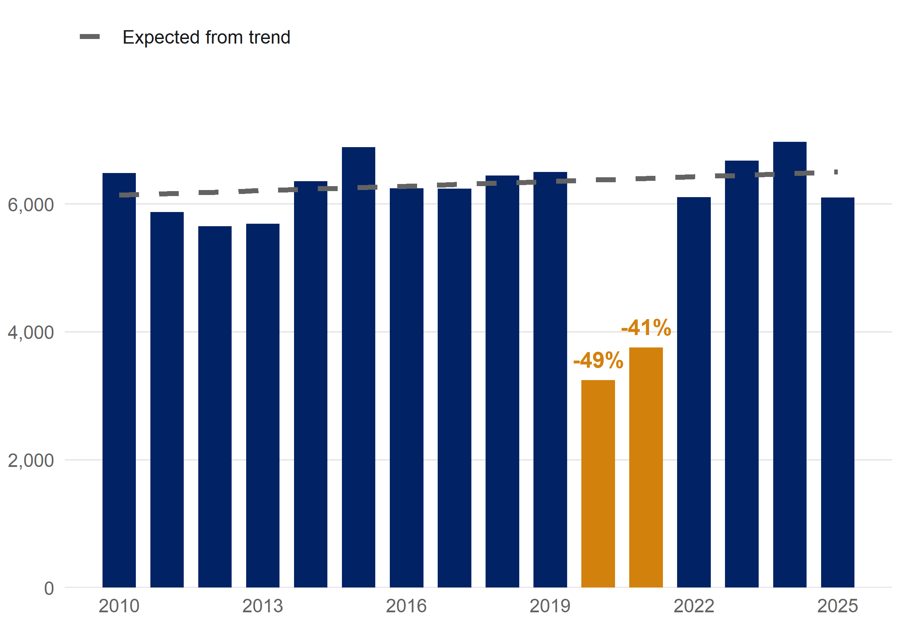
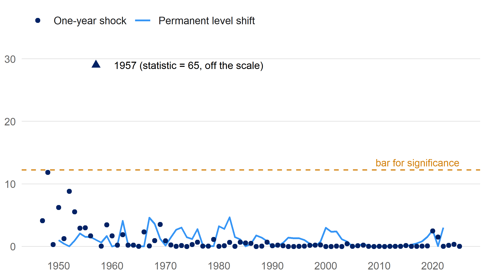
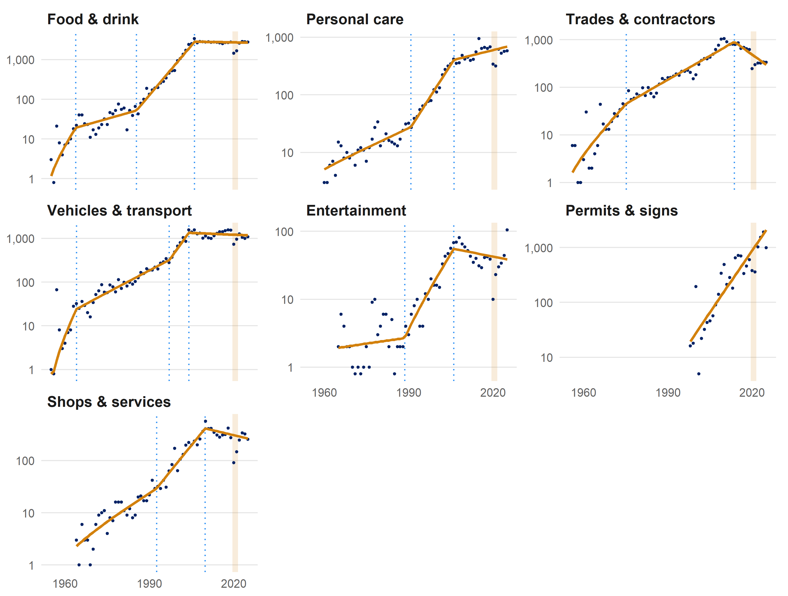
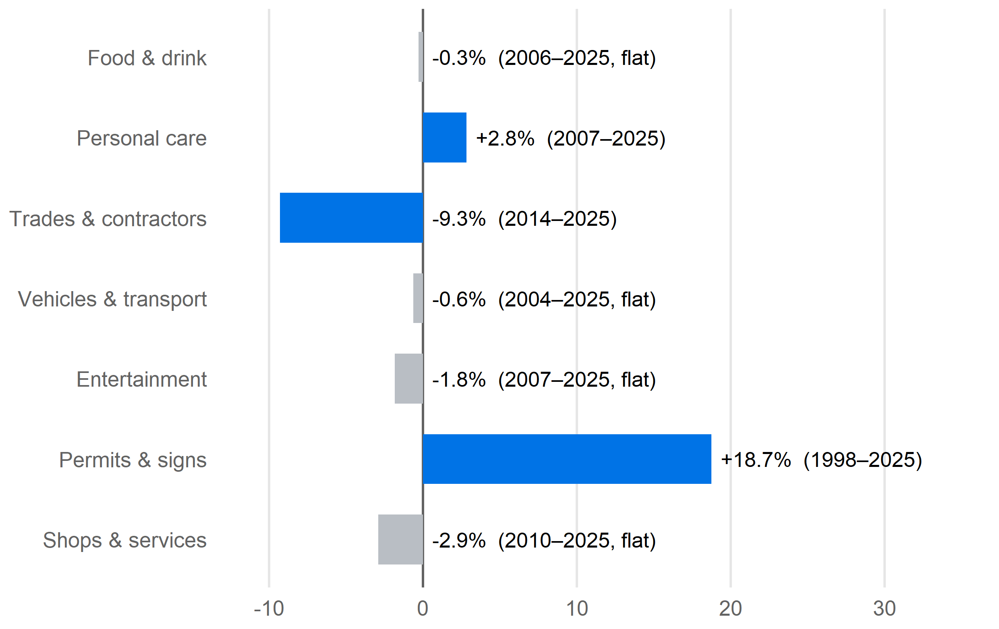
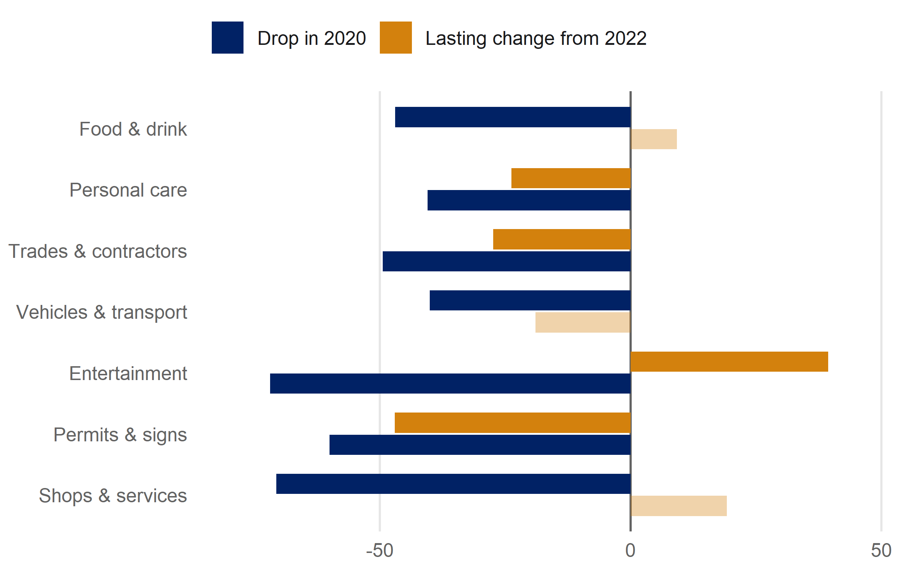
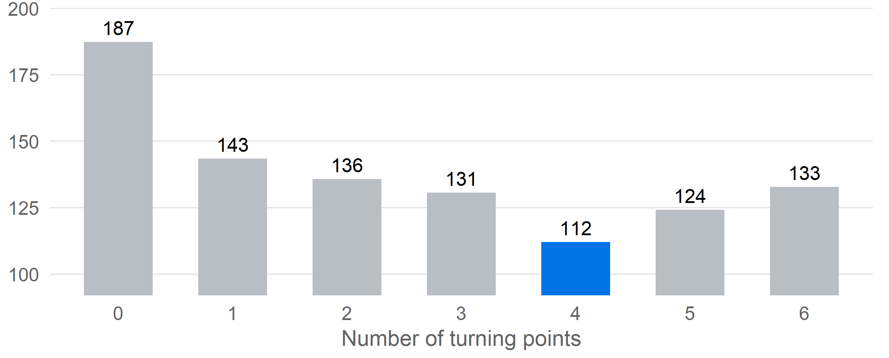

Trends, structural breaks and shocks in eight decades of licence issuance. An analysis of 160,248 licence records from the City of Toronto's Municipal Licensing & Standards division, testing whether growth was steady or moved in phases, which years were shocks, and how seven sectors differ.
Data: City of Toronto, Business Licences and Permits (Toronto Open Data), extract dated 2026-11-14. Author's analysis.

Business licences are one of the few administrative records that track Toronto's commercial activity over many decades. Every restaurant, taxi, renovator, personal-services setting and many other businesses need a municipal licence, so the number issued each year offers a long view of how the City's regulated business activity has evolved: through decades of growth, the 1998 amalgamation, changes in record-keeping, and the COVID-19 pandemic.
A chart of the raw counts suggests several growth phases and a sharp dip in 2020–21. But a bend in a line can be random noise, and a dip can be part of a longer trend. This briefing tests these patterns formally.

Business Licences and Permits, Toronto Open Data (Municipal Licensing & Standards), extract dated 2026-11-14.
80 complete years, 1946–2025 (154,715 licences), counted by issue date. Partial 2026 data used only to check predictions.
91 licence categories grouped into seven sector groups, each analysed separately.
Five distinct growth phases since 1946. The changes in pace are confirmed by every statistical test applied, not visual impressions.
Growth has stalled since about 2007. Excluding the pandemic, the City has issued between 5,226 and 6,971 licences a year, with no significant trend.
COVID-19 was the largest modern shock, but temporary. Issuance fell about 49% below the expected level in 2020 and 41% in 2021, then returned to the plateau in 2022.
No permanent jump or drop in any year. The big changes are changes in the pace of growth, not one-time shifts.
The 1957 spike is a data artefact: 103 of its 108 records carry a placeholder date of January 1, 1957.
The model that best fits the data divides the period into five phases, separated by turning points around 1952, 1964, 1991 and 2007. The turning points were found by the data, not chosen by eye.
Licence issuance moved through five growth phases

A handful of licences a year (0 to 9), most likely old licences still on file.
Very rapid growth (~37% a year) from a tiny base.
Long, steady growth of about 7.6% a year, the most stable phase.
Growth more than doubled to ~17.3% a year, spanning the 1998 amalgamation.
A plateau, with no significant growth.
Around 2007 (95% confidence range: 2003.8 to 2009.6), the fast growth of the previous 15 years stopped. This is the most precisely dated of the four turning points, and it is not driven by a single sector: almost every group of licences levelled off at about the same time.
A plateau in licences issued does not necessarily mean Toronto's economy stopped growing. It means the number of new and renewed licences recorded in this dataset stopped growing. Changes in which businesses need licences, renewal practices and record-keeping can all influence the count.
Growth was fastest in the 1950s and 1990s, and has stopped since 2007

Issuance fell by almost half in 2020, then returned to the plateau

In 2020 the City issued 3,244 licences, about 49% below the level expected from the pre-pandemic plateau; in 2021, 3,753 (about 41% below). In 2022 issuance returned to 6,106, and 2023–2025 sit on the pre-2020 plateau.
Of six candidate explanations, from "no effect" to "a permanent change in level and growth", the best-supported by far is a temporary two-year dip. A permanent level shift from 2020 is not supported (p = 0.101), and there is no evidence of lasting change after 2022 (p ≈ 1.00).
Partial 2026 data agree: 5,506 licences by mid-November, about 6,320 on a full-year basis, close to the model's projection of about 6,521.
Every year from 1947 to 2025 was tested for a one-off shock and for a permanent level shift. Testing 80 years at once means a few will look unusual by chance, so the significance bar was set by simulating 299 artificial histories with no shocks. A real shock had to beat 95% of them.
Only a few years cleared the bar: COVID-19 (2020–21), the 1957 artefact, and small departures in 1948 and 1968–69 (years with very few records). No year showed a permanent shift in level.
Only a handful of years stand out once chance is accounted for

The overall plateau is shared across sectors, but the pandemic's legacy is not.
Most groups grew fastest in the 1990s and 2000s and levelled off after 2006

Food and drink, personal care, vehicles and transport, entertainment, and shops and services all show a turning point between about 2004 and 2010. The plateau is city-wide.
Food and drink shifted up in 1976 and 2000; personal care up in 2014 (likely a licensing-scope change); permits and signs down in 2017.
Trades and contractors is the only group with a clear downward trend, falling about 9% a year since 2014.
Only trades and contractors is in clear decline

Some sectors recovered fully from COVID-19; others did not

Food and drink; shops and services.
Personal care (~24% below path); trades and contractors (~27% below, on a falling trend).
Vehicles and transport, still below its 2016–19 level (p = 0.067).
Entertainment, with a sharp rise in 2025 (small counts).
In the total, these movements largely cancel out, which is why the overall series looks fully recovered.
Counts range from zero to almost 7,000. On a log scale a constant percentage growth rate is a straight line, so a "phase" is a straight stretch and a "structural break" is where the line bends. Annual counts are also overdispersed (variance ~125× what a Poisson model assumes), so a negative-binomial count model is used; without it, almost every year would wrongly look like a shock.
Joinpoint (segmented) regression on the log of the count. The computer tries every location for the joints; 1957, 2020 and 2021 get one-off adjustments so they cannot bend the long-run line.
The Bayesian Information Criterion (BIC) rewards fit but penalises extra joints. It was lowest with four turning points (five phases).
Four tests per break: a standard slope-change test, Newey–West robust errors, a negative-binomial count test, and a remove-the-joint refit. All passed at the 0.1% level.
Bai–Perron multiple-break regression; sup-F, ave-F and exp-F tests; CUSUM and MOSUM; Chow tests. Every test rejected a single steady trend.
A forward search over every year for one-off shocks and permanent level shifts, with simulation-based critical values (299 replications); then direct tests of known dates such as 1998 and 2020.
Residual and assumption checks, then the full analysis repeated for seven groups built from 91 licence categories.
Four turning points give the best balance of fit and simplicity

Toronto's licence history is best described as a sequence of growth phases separated by statistically confirmed changes in pace, not a smooth curve or a series of one-off jumps. For anyone using these data to plan, forecast or evaluate policy, three implications stand out.
Projecting the long-run average or the 1990s pace forward would greatly overstate issuance. Since 2007 the best description is a stable ~6,200 licences a year.
Model the pandemic years as a one-off dip. Treating them as ordinary years would bend estimated trends downward.
Personal care, and especially trades and contractors, warrant closer monitoring. The trades decline began before the pandemic, pointing to longer-term causes.
The extract is not a complete historical register, results for small groups are less certain, and category results depend on how categories were grouped. The analysis describes when the pace changed; it does not by itself establish why.
Read it online or download the PDF: 22 pages including all eight charts, the full methodology (Appendix A), detailed statistical results (Appendix B) and bibliography.